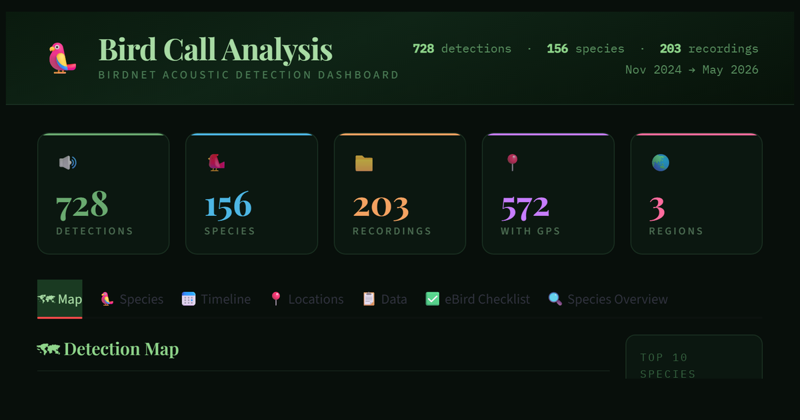

Interactive dashboard
A personal birdsong archive: field recordings run through an acoustic model, mapped and browsable by species, with playable reference calls.

A personal birdsong archive and analysis portal, built around 327 field recordings collected by Nikunj Jambu. The portal processes those recordings through an AI acoustic model and surfaces 1,173 detections across 157 species — complete with a geographic map, species profiles, a detection timeline, playable Xeno-canto audio for each species, and a false-positive flagging tool. It is intended for birders, naturalists, and anyone curious about what is audible in the field but invisible to the naked eye.
Most personal field recordings live in a folder on a hard drive, unanalysed and unsearchable. Species-level acoustic identification is technically possible but locked inside desktop tools that produce spreadsheets, not browsable interfaces. This portal converts raw audio into an explorable dataset — making it possible to ask questions like which species appeared in February, what was heard at this GPS point, or is this a reliable detection or a false positive — without writing a single line of code.
Recordings were run through BirdNET v2.4 (Cornell Lab / Chemnitz University of Technology), an open-source neural network trained on over 6,500 species. Detections were extracted, cleaned, and enriched with species metadata, range information, and audio samples from public sources. The interface is built with Python and Streamlit, deployed on Streamlit Cloud at no cost. The entire pipeline from raw audio to deployed dashboard runs on open-source tools and free infrastructure.
All third-party media is credited to its original contributor at the point of use.
The portal is actively being developed. Future versions will include richer species information, improved identification accuracy, support for recordings from additional locations, and tools for community input on uncertain detections. If you notice an error, have a recording you would like to contribute, or simply want to get in touch, reach out via the contact details below.
To report an error, offer a recording, or just get in touch: jambu.nikunj@gmail.com